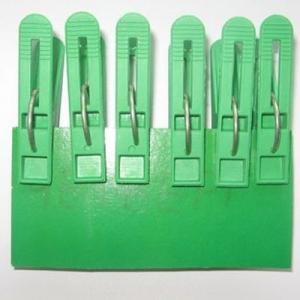

Прищепками играем — не только мелкую моторику развиваем
Почему так важно для детей развитие мелкой моторики рук?
Дело в том, что в головном мозге человека центры, отвечающие за речь и движения пальцев рук, расположены очень близко. Стимулируя мелкую моторику и активизируя тем самым соответствующие отделы мозга, мы активизируем и соседние зоны, отвечающие за речь. Особенно важно развитие мелкой моторики рук у детей младшего дошкольного возраста.
Выполняя пальчиками различные упражнения, ребёнок достигает хорошего развития мелкой моторики рук. Кисти рук приобретают хорошую подвижность, гибкость, исчезает скованность движений.
Можно использовать игры с прищепками для развития у детей творческого воображения, логического мышления, закрепления цвета, счёта.
Игры интересны и увлекательны. Могут использоваться педагогами при реализации образовательныхобластей «Социализация», «Здоровье», «Коммуникация», «Труд», «Познание».
Чтобы игра была интересной для ребёнка, можно прикреплять прищепки по тематике (лучики к солнцу, иголки к ёжику, лепестки к цветку, ушки к голове зайчика) Для этого нужно, соответственно, сделать заготовки солнца, ёжика, цветка, зайчика на картонной основе.
Когда дети научатся надевать и снимать прищепки, можно предложить им игры - задания.
Использование прищепок одного цвета
Цель: учить детей подбирать нужные прищепки одного цвета, развивать мелкую моторику рук, тактильные ощущения.
Средства: прищепки разного цвета, поднос, заготовка ёжика.
Вариант игры: воспитатель предлагает ребёнку сделать ёжику колючки. Учит нажимать пальчиками на прищепку, чтобы она открывалась.
Когда ребёнок закончит выполнять задание, надо спросить его, прищепки какого цвета он использовал.
А затем предложить снять прищепки, проследив, чтобы ребёнок снова делал нажим на прищепку и открывал её.
Чередование прищепок по цвету
Цель: учить чередовать прищепки двух цветов; развивать мелкую моторику рук. Средства: прищепки жёлтого и оранжевого цвета, поднос, заготовка солнышка.
Вариант игры: сначала воспитатель предлагает детям рассмотреть солнышко, у которого уже есть лучики с чередующимися прищепками двух цветов, предлагает найти закономерность и продолжить составлять лучики в определённом порядке, это позволяет не только развивать мелкую моторику рук, а также восприятие, внимание, память и мышление.
Затем задание усложняется. Дети следуют уже словесной инструкции воспитателя.
Можно предложить детям найти и исправить ошибку, которую допустил какой-нибудь персонаж, например, Незнайка.
Соотнесение количества прищепок с цифрой
Цель: учить соотносить цифру с количеством предметов в пределах 5-ти; развивать мелкую моторику рук.
Средства: прищепки разного цвета, поднос, заготовки лошадки, зайчика, птички, морковки и репки, пластмассовые цифры 1, 2, 3, 4, 5. Вариант игр: воспитатель предлагает детям доделать недостающие детали животным и овощам с помощью прищепок.
- Ребята, прищепок надо взять столько, чтобы их количество соответствовало предложенной цифре
/можно изменить задание: когда дети доделают фигурки животных и овощи, спросить у них, сколько прищепок понадобилось, например, чтобы сделать уши, хвост или ноги, затем предложить подобрать цифру, соответствующую количеству приделанных прищепок/
Проявление творчества
Цель: учить использовать цветовую гамму прищепок по выбору, развивать творческие способности, мелкую моторику рук.
Средства: прищепки разного цвета, поднос, заготовки бабочки, цветка, самолёта.
Вариант игр: воспитатель предлагает доделать недостающие детали предметам. Когда дети выполнят задание, спросить у них, какую часть предмета они доделали и какого цвета прищепки использовали.
«Ботва у овощей», «Рыбка», «Сделай лучики солнышку», «Сделай колючки ёжику», «Божья коровка», «Подсолнух», «Самолёт», «Домик с трубой» .
«Цветные коробки»
На боковые части однотипных картонных коробочек приклеиваются цветные кружки. Используются прищепки четырех основных цветов. Малышу предлагается прикрепить к краям каждой коробки прищепки соответствующего цвета. Позже можно внести элемент соревнования.
«Выстроим заборчики»
В игре для детей используются прищепки четырех цветов и соответствующего цвета картонные полоски. Малыш делает «штакетник», цепляя прищепки к картонке, подходящей по цвету. Можно усложнить задание, чередуя прищепки.
«Цветной круг»
В игре, предназначенной для детей 4 – 5 лет, закрепляются основные и промежуточные цвета и одновременно знание цифр и счета. Если не удается подобрать прищепки по цвету, можно на деревянные изделия наклеить полоски соответствующих цветов.
Логопедические игры с прищепками
Логопедические игры – тренинг пальцев, совмещенный с чтением стишков.
«Поможем маме»
Для игры необходимо оборудование: тазик с кукольной одеждой (можно подготовить бумажную одежку), натянутая веревка, прищепки. Ребенок развешивает «белье», сопровождая движения словами:
Нашей маме помогали,
Всю одежду постирали.
Надо все теперь сушить
На прищепки зацепить.
«Разговор животных»
В этих упражнениях дети последовательно открывают до упора и закрывают прищепки в обеих руках в сопровождении чтения стишков:
Двое маленьких галчат
Целый день в гнезде кричат.
Открывают рты галчата:
Потому что есть хотят.
Что за звуки у пруда?
- Ква-су, ква-су нам сюда!
Ква-су, ква-су, просто-ква-ши!
Надоела нам вода!
Подойдут и другие подобные четверостишия.
Игры для развития воображения
Развивающие игры с прищепками направлены на создание различных образов, при помощи дополнения картонной формы прищепками.
При помощи прищепок можно разыгрывать сценки и рассказывать сказки.
{kind=link}